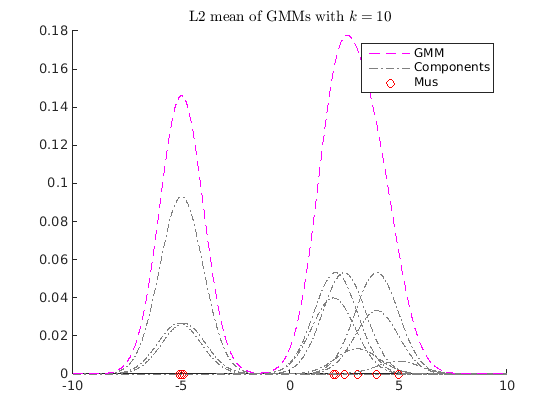
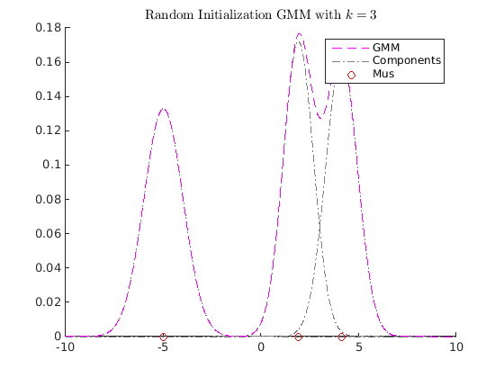
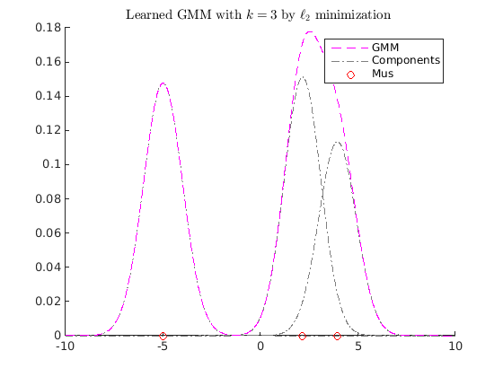
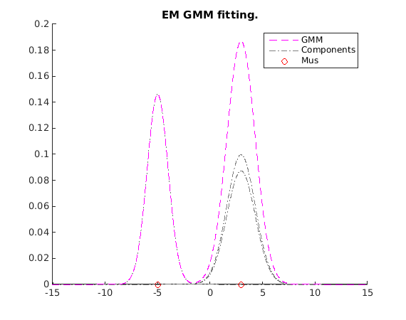
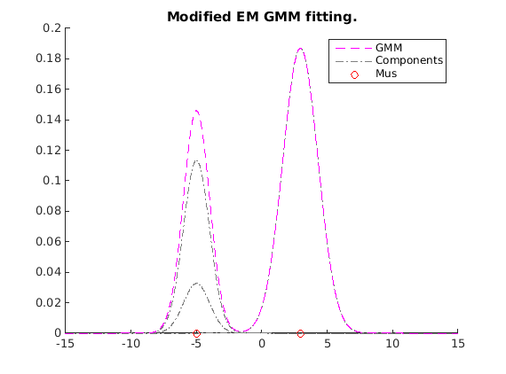

DEMO for "Interpolation on the manifold of k-GMMs"
Hyunwoo J. Kim, Nagesh Adluru, Monami Banerjee, Baba C. Vemuri, Vikas Singh, Interpolation on the manifold of k component Gaussian Mixture Models (GMMs), In International Conference on Computer Vision (ICCV), December 2015.
Project page: http://pages.cs.wisc.edu/~hwkim/projects/k-gmm/
Github repository: http://github.com/MLman/kgmm_interpolation/
Github page: http://mlman.github.io/kgmm_interpolation/
The last update by Hyunwoo J Kim 2016/01/02 13:30:55 (CST)
Contents
Generate random gmm distributions.
clear rng default addpath(genpath('.')) kcomp = 3; d = 2; gmm1 = randgmm(d, kcomp); gmm2 = randgmm(d, kcomp);
GMM parameterizations
% L2 normalization can be obtained by ngmm1 = l2normalizeGMM(gmm1); ngmm2 = l2normalizeGMM(gmm2); fprintf('L2 norm of the normalized GMMs |ngmm1| = %f, |ngmm2| = %f \n', l2normGMM(ngmm1), l2normGMM(ngmm2)); % Square-root reparameteraization can be obtained by taking the square root % of the PDF values.
L2 norm of the normalized GMMs |ngmm1| = 1.000000, |ngmm2| = 1.000000
Distance between GMMs
% L2 distance between GMMs d_l2 = l2distGMM(gmm1, gmm2); % L2 distance between normalized GMMs % d_nl2 = l2distGMM(ngmm1, ngmm2); d_nl2 = l2ndistGMM(gmm1,gmm2); % Geodesic distance on the unit Hilbert sphere with the l2-normalized GMMs. d_ngeo = acos(innerprodGMM(ngmm1, ngmm2)); fprintf('L2 norm of the normalized GMMs d_l2(gmm1,gmm2) = %f, d_nl2(gmm1, gmm2) = %f, d_ngeo(gmm1,gmm2) = %f \n', d_l2, d_nl2, d_ngeo);
L2 norm of the normalized GMMs d_l2(gmm1,gmm2) = 0.266805, d_nl2(gmm1, gmm2) = 1.002828, d_ngeo(gmm1,gmm2) = 1.050465
Gradient descent scheme for -distance
clear close all gmm1 = obj2structGMM(gmdistribution([-5; 2], ones(1,1,2),[0.7 0.3])); gmm2 = obj2structGMM(gmdistribution([-4.9 ;2.1;3.1; 4;5], ones(1,1,5),[0.2 0.4 0.1 0.25 0.05])); gmm3 = obj2structGMM(gmdistribution([-5.1 ;2.5;4;], ones(1,1,3),[0.2 0.4 0.4])); gmms = {gmm1, gmm2, gmm3}; gmml2mean = l2meanGMMs(gmms); figure myplotgmm1D(gmml2mean,[-10,10],[1,0,1],0.01); title(sprintf('L2 mean of GMMs with $$k=%d$$', length(gmml2mean.PComponents)),'interpreter','latex'); maxiter = 100; k = 3; tic [kgmm, fval, gnorm, fval_history, status, gmm0] = gd_gmms_closest_fast(gmml2mean, k, maxiter); toc figure myplotgmm1D(gmm0,[-10,10],[1,0,1],0.01); title(sprintf('Random Initialization GMM with $$k=%d$$',k),'interpreter','latex'); figure myplotgmm1D(kgmm,[-10,10],[1,0,1],0.01); title(sprintf('Learned GMM with $$k=%d$$ by $$\\ell_2$$ minimization ', k),'interpreter','latex')
Elapsed time is 0.699512 seconds.  
EM algorithm for KL-divergence or cross entory.
Note that the proposed EM algorithms do not optimize L2 distance. But it returns a good solution w.r.t L2 distance too.
option.maxiter = 100; [gmmbar_em, stats] = em_gmm_closest_full(gmml2mean, k, option) figure; hold on myplotgmm1D(gmmbar_em,[-15 15], [1,0,1], 0.01); title('EM GMM fitting.') hold off
L2 distance 0.038671, parameter change 1.000000e+04 tol 1.000000e-06
L2 distance 0.014213, parameter change 1.299951e+00 tol 1.000000e-06
L2 distance 0.019932, parameter change 7.708335e-01 tol 1.000000e-06
L2 distance 0.021607, parameter change 3.825369e-01 tol 1.000000e-06
L2 distance 0.022044, parameter change 1.806637e-01 tol 1.000000e-06
L2 distance 0.022149, parameter change 8.633808e-02 tol 1.000000e-06
L2 distance 0.022173, parameter change 4.127482e-02 tol 1.000000e-06
L2 distance 0.022178, parameter change 1.970108e-02 tol 1.000000e-06
L2 distance 0.022179, parameter change 9.394260e-03 tol 1.000000e-06
L2 distance 0.022180, parameter change 4.477298e-03 tol 1.000000e-06
L2 distance 0.022180, parameter change 2.133357e-03 tol 1.000000e-06
L2 distance 0.022180, parameter change 1.016390e-03 tol 1.000000e-06
L2 distance 0.022180, parameter change 4.842092e-04 tol 1.000000e-06
L2 distance 0.022180, parameter change 2.306716e-04 tol 1.000000e-06
L2 distance 0.022180, parameter change 1.098879e-04 tol 1.000000e-06
L2 distance 0.022180, parameter change 5.234834e-05 tol 1.000000e-06
L2 distance 0.022180, parameter change 2.493761e-05 tol 1.000000e-06
L2 distance 0.022180, parameter change 1.187971e-05 tol 1.000000e-06
L2 distance 0.022180, parameter change 5.659225e-06 tol 1.000000e-06
L2 distance 0.022180, parameter change 2.695925e-06 tol 1.000000e-06
L2 distance 0.022180, parameter change 1.284277e-06 tol 1.000000e-06
gmmbar_em =
NDimensions: 1
DistName: 'gaussian mixture distribution'
NComponents: 3
PComponents: [0.3377 0.3667 0.2956]
SharedCov: 0
Iters: []
RegV: 0
NlogL: []
CovType: 'diagonal'
mu: [3x1 double]
Sigma: [1x1x3 double]
AIC: []
BIC: []
Converged: []
stats =
terminate: 'Converged.'
iter: 21
l2history: [21x1 double]
 Modified EM (our restricted GPMM)
Note that the proposed EM algorithms do not optimize L2 distance. But it returns a good solution w.r.t L2 distance too.
option.getGamma = 'getGamma_l2dist'; option.debug = true; gmmbar_mem = em_rgpmm(gmml2mean, k, option); figure; hold on myplotgmm1D(gmmbar_mem,[-15 15], [1,0,1], 0.01); title('Modified EM GMM fitting.') hold off
L2 distance 0.441743, parameter change 1.000000e+04 tol 1.000000e-06 L2 distance 0.249570, parameter change 3.679200e+01 tol 1.000000e-06 L2 distance 0.249564, parameter change 2.577988e-01 tol 1.000000e-06 L2 distance 0.249375, parameter change 1.466111e+00 tol 1.000000e-06 L2 distance 0.238867, parameter change 8.519961e+00 tol 1.000000e-06 L2 distance 0.090234, parameter change 2.627916e+01 tol 1.000000e-06 L2 distance 0.022180, parameter change 4.177666e+00 tol 1.000000e-06 L2 distance 0.022180, parameter change 1.788741e-02 tol 1.000000e-06 L2 distance 0.022180, parameter change 3.913876e-06 tol 1.000000e-06